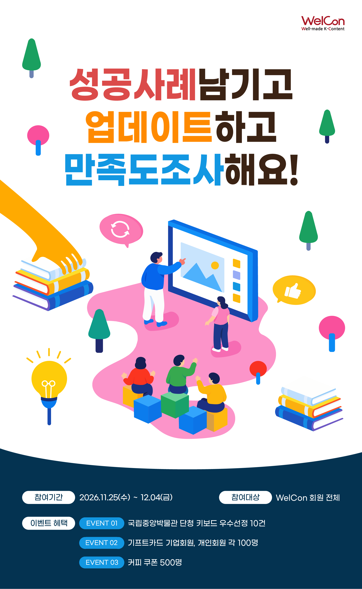
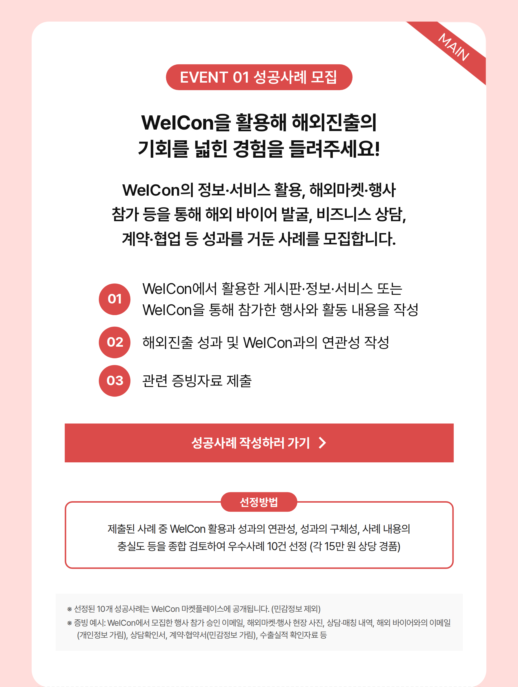
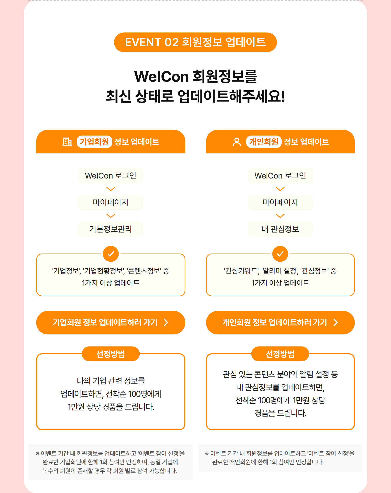
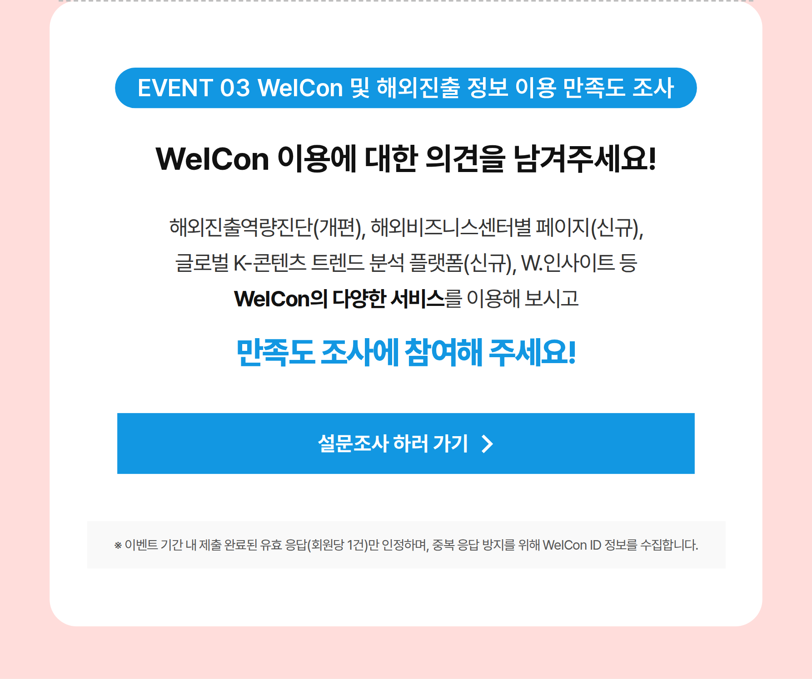
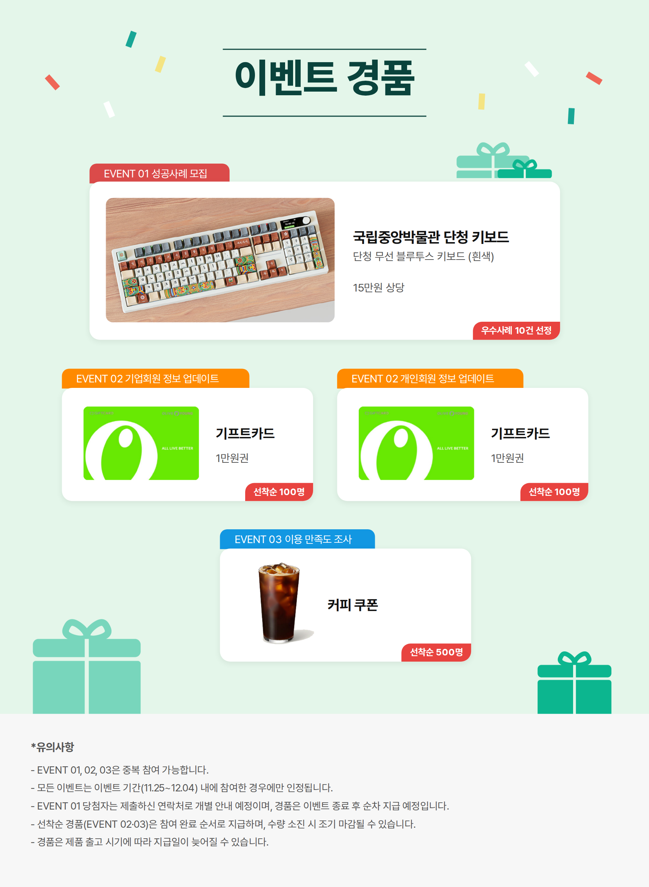

<div class="newsletter_acrticle">
<table style="background-color:#fafafa; font-size:0; line-height:0; width:100%; max-width:800px; margin:0 auto; padding:0; border:0; table-layout:fixed;" cellpadding="0" cellspacing="0" align="center" border="0">
  <tr style="padding:0; margin:0;"><td style="padding:0; margin:0; font-size:0 !important; line-height:0;">
    <a href="https://welcon.kocca.kr/ko/main" target="_blank" title="새창" style="display:block;"></a>
  </td></tr>
  <tr style="padding:0; margin:0;"><td style="padding:0; margin:0; font-size:0 !important; line-height:0;">
    <a href="https://naver.me/5MviCv0j" target="_blank" title="새창" style="display:block;"></a>
  </td></tr>
  <tr style="padding:0; margin:0;"><td style="padding:0; margin:0; font-size:0 !important; line-height:0;">
    <a href="https://naver.me/5MviCv0j" target="_blank" title="새창" style="display:block;"> 마이페이지 > 기본정보관리, 기업정보·기업현황정보·콘텐츠정보 중 1가지 이상 업데이트, 선착순 100명 1만원 상당 경품 / 개인회원 정보 업데이트: WelCon 로그인 > 마이페이지 > 내 관심정보, 관심키워드·알리미 설정·관심정보 중 1가지 이상 업데이트, 선착순 100명 1만원 상당 경품" style="width:100%; max-width:800px; height:auto; display:block; border:0;" /></a>
  </td></tr>
  <tr style="padding:0; margin:0;"><td style="padding:0; margin:0; font-size:0 !important; line-height:0;">
    <a href="https://naver.me/xk9TqWj2" target="_blank" title="새창" style="display:block;"></a>
  </td></tr>
  <tr style="padding:0; margin:0;"><td style="padding:0; margin:0; font-size:0 !important; line-height:0;">
    
  </td></tr>
</table>
</div>
